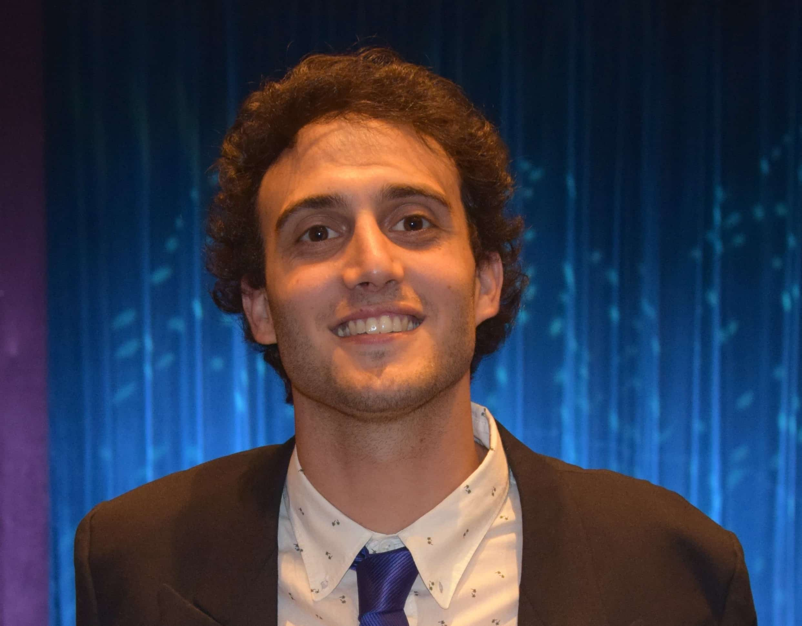

Gastón Langellotti
Desarrollador de Software
Licenciado en Actividad Física y Deporte
Profesor en Educación Física
Educación
-
Actualidad: Argentina programa 4.0 parte 2 (Ministerio de Economía).
-
2023: Marketing digital y Paid Media (Programa Digital Ad
Degree).
-
2022: React.js en Agencia a lo largo de la vida (CABA).
-
2022: Programación 2 en Academia BA (Ministerio de Desarrollo
Económico Producción, Gobierno de Ciudad de Buenos Aires).
-
2022: Argentina programa 4.0 parte 1 (Ministerio de Economía).
-
2022: Ciencia de datos 2 en academia BA (Ministerio de Desarrollo
Económico Producción, Gobierno de Ciudad de Buenos Aires).
-
2022: FullStack Desarrollo Web (JavaScript/Node JS) en Agencia a
lo largo de la vida (CABA).
-
2022 - Actualidad: Inglés para programadores en Pearson English.
-
2022: Licenciado en actividad física y deporte. Universidad de
Flores (UFLO).
-
2021: Full Stack Java en Agencia a lo largo de la vida (CABA).
-
2015: Profesor de Educación Física. Instituto privado General San
Martín (GEBA).
-
2011: Bachiller en Humanidades y Ciencias Sociales. Colegio
Privado Juan Bautista Alberdi (JBA).
Experiencia laboral
Actualmente: Entrenamiento en Salesforce & Salesforce Industries
- Programa de entrenamiento en Salesforce dictado por LabsXD.
- Rol como XDGen.
2022 - Actualmente: Escuela de natación "Deep Blue" | Socio y Coordinador
- Supervisar, acompañar y dirigir el proceso de enseñanza.
- Capacitación del personal docente.
- Comunicación con las familias.
- Armado de grupos.
2021 - 2022: Workana | Freelancer
- Data entry.
- Soporte administrativo.
2016 - Actualmente: Colegio Piaget de San Isidro | Profesor
- Profesor de natación.
- Profesor de destreza.
- Traslado de estudiantes.